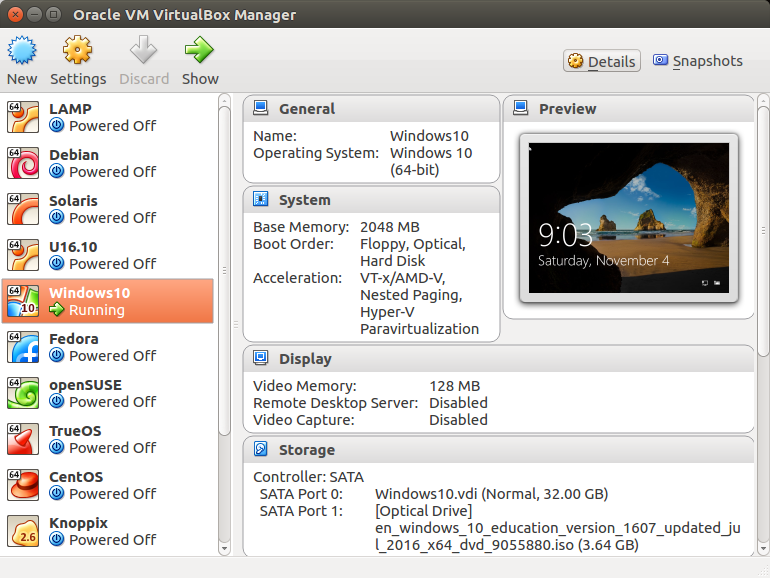

Here is my attempt to explain what dark matter is. I have to say, we do not know yet what dark matter really is. However, there are many evidences pointing to the existence of this unknown matter.
By observing electromagnetic radiation from the Space we can estimate the amount of matter out there, say inside a galaxy. By the way it is not only the stars, but also the `dust' that count. We can also measure the rotation speed of the galaxy by using the doppler effect. According to the law of physics this rotation speed depends on the amount of mass inside the galaxy, which is the source of the gravity. It is puzzling that the observed speed suggests significantly more gravity than that would be produced by our estimate based on the observed matter. Many attempts from many different point of views had been done trying to explain this discrepancy. The easiest explanation, so far, is that there is an unknown matter which does not interact electromagnetically, hence is not observed, but nonetheless has mass and contribute to the gravity at the large scales. We call this matter dark matter.
I prefer Ubuntu for my main platform. Nonetheless, it would be nice to have Windows at hand as well. Also, with so many flavors of Linux and BSD out there, I would like to try them out without replacing my OS. We can have several OSes running simultaneously in a single machine by using virtualization, provided that we have enough resources (i.e., CPU, memory, and harddisk space). There are many virtualization technology to choose from, including Hyper-V, VMware, and VirtualBox. I choose VirtualBox.

I like VirtualBox. It is easy to set up and configure, and importantly, it is also running on a Linux host. To install VirtualBox on Ubuntu is easy, just do sudo apt-get install virtualbox. Once it is installed, we can fire it up and start creating virtual machines by clicking the New button, and play around with the configuration. The good thing is, we can always delete it and create a new one without much trouble.
I am using VirtualBox version 5.1.30 right now. VirtualBox has default value suggestion for the amount of memory and harddisk space to be allocated to the virtual machine. For the memory, it is usually 1 GB or less for Linux, and 2 GB for Windows. These should be considered as the minimum for a smooth run. We can always increase the amount if needed. However, I found that 2 GB for Windows is sufficient, for my regular usage. Choosing harddisk space is more tricky, since it is not easy to modify it later after the virtual machine has been running. We need to think before hand how much space we are going to need according to our plan for the machine. Generally, give some extra space to be safe.
To run an actual virtual machine, we need to get/download the ISO of the OS that we want. Choose the virtual machine that we have created, and then click the Start button. Use the ISO as the Start-up disk. After that, proceed as usual as in the OS installation process.